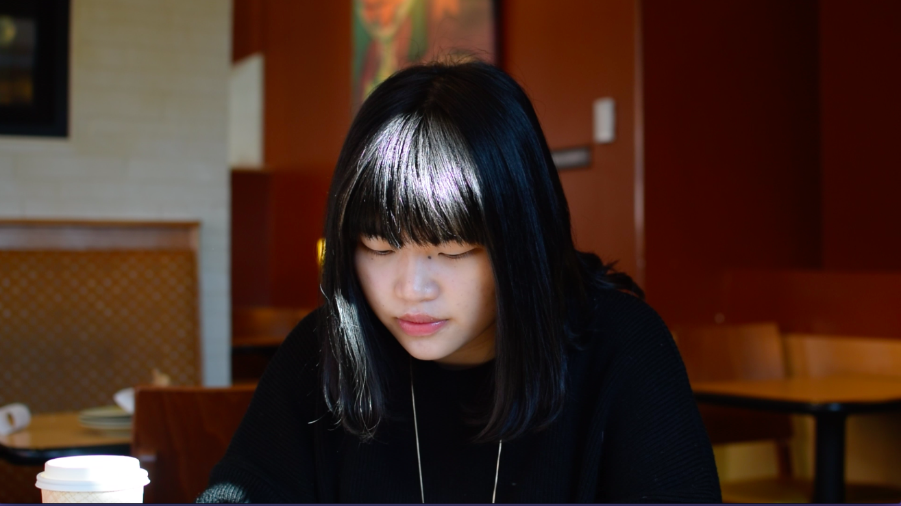

Yizhou "Lillie" Li

8 months agoIn June 2014, Lillie finished her undergraduate studies in Hunan University, Changsha, China and started to pursue her dual degree in MBA and accounting in Northeastern University. Lillie comes from Changsha, China, and she has stayed there for 22 years before becoming to the US for this new journey.
Tinghao Liang

In 2013, Tinghao graduated from college in China and continued his graduate school in the Electric Engineering department at Tufts. The program he joined is a master and PhD combined degree. He is on the second also the final year of his master degree. He will decide if he wants to continue the PhD studies soon.
Qiaochu Li

Qiaochu graduated from Peking University in 2012 and got admitted to several PhD programs in the United States. He chose MIT to continue his studies. He specializes in Material Science. Now, he is in his third year of PhD program.
Ke "Kyra" Chen

Kyra’s inspiration of coming to the US comes from the experience of a summer camp in the US. In 2008, she participated a summer camp in Houston, TX. After that, she decided to transfer to an American high school. In 2009, she was accepted by the Webb School in Claremont, California, and she graduated from the Webb School in 2011. In fall 2011, she started a new journey at Tufts University. Now she is a senior majoring in Applied Math, looking forward to continuing her studies in Statistics at Columbia University in fall. Kyra comes from Dalian, China. She came to the US when she was 17.